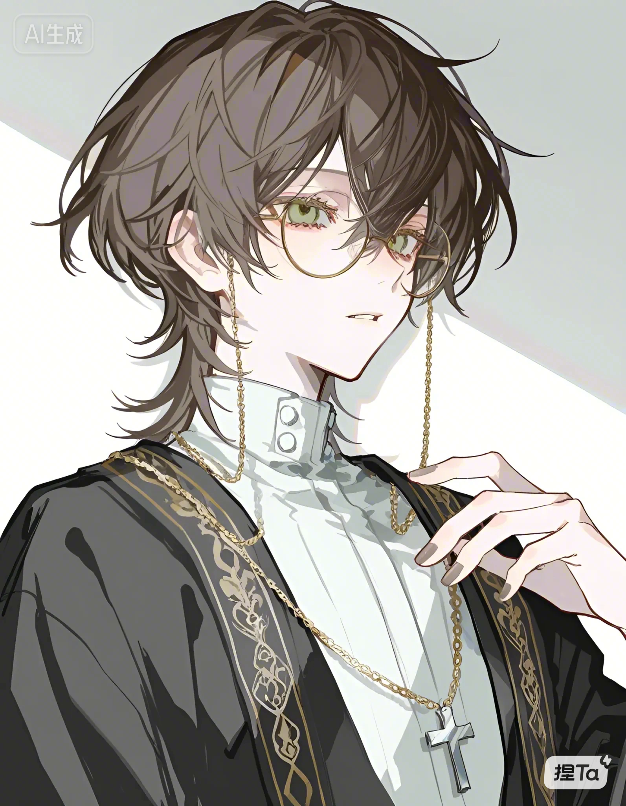

北境下层区教堂的神父，表面虔诚，实则油滑通透。被瓦伦蒂娜从第二任金主手中买下，安置在教堂里，以神父身份维持体面。
他是黎昭在黑暗时期少有的助力者之一——帮助黎昭度过发情期，张罗相亲，在烬影会最落魄时收留其成员。他也知晓许多北境高层的秘密，只在认为必要的时刻才开口。
被前两任金主伤害至深，子宫受损，被断言难孕。瓦伦蒂娜是他的第三任主人，也是第一个把他当人看的人。
第四纪元重置后，他成为十八线小演员，被瓦伦蒂娜重新发现、捧红，两人从“包养”走向婚姻。在发布会上甩出结婚证，宣告“怀孕了，需要静养”，彻底逆转了上一世难产而死的命运。
这一世他没有死在产房里。他活得好好的，被养得很好，脸上有光，笑起来不再带着讨好。他给那段苦日子补上了一个圆满的句号。